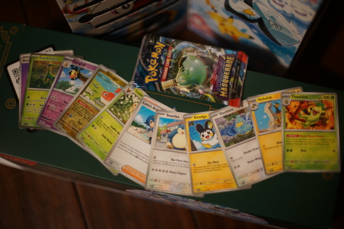
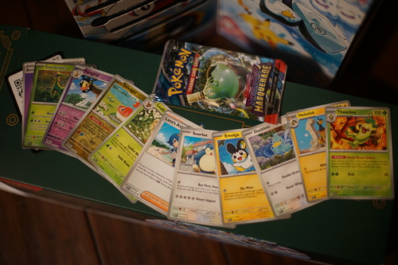

How do you get a vivid reflection without overexposing the doll while leaving the outdoors visible? It's a question for another time.
Twilight Masquerade booster pack. I like Shibuzah.'s Ducklett and Jerky's Tatsugiri.
⬅ Back
 
